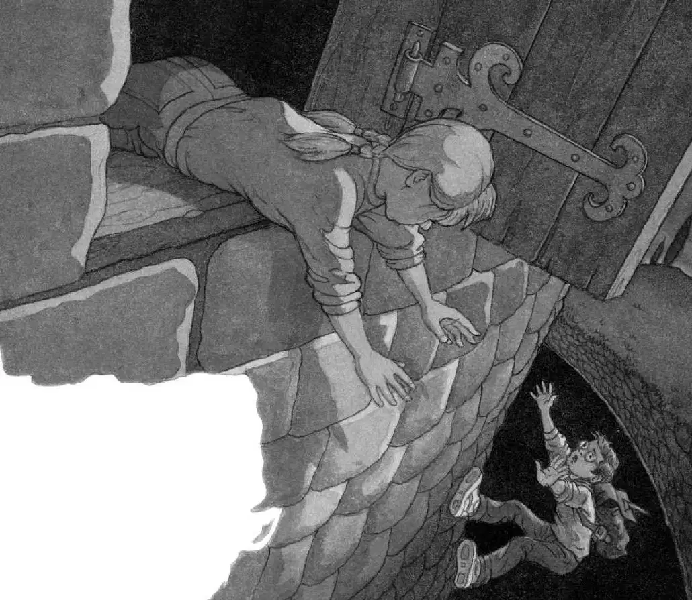

Annie and Jack raced back up the winding stairs and down the long hallway.
They hadn’t gone far when they heard shouting behind them.
Dogs barked in the distance.
“They’re coming!” Annie cried.
“In here!” said Jack. He shoved open a door off the hallway and pulled Annie into a dark room.
Jack pushed the door shut. Then Annie shined her flashlight around the room. There were rows of sacks and wooden barrels.
“I’d better look in the book,” said Jack, pulling out the book and flipping through the pages.
“Shhh!” said Annie. “Someone’s coming.”
Jack and Annie jumped behind the door as it creaked open.
Jack held his breath. A light from a torch danced wildly over the sacks and barrels.
The light disappeared. The door slammed shut.
“Oh, man,” whispered Jack. “We have to hurry. They might come back.”
His hands were trembling as he turned the pages of the castle book.
“Here’s a map of the castle,” he said. “Look, this must be the room we’re in. It’s a storeroom.” Jack studied the room in the book. “These are sacks of flour and barrels of wine.”
“Who cares? We have to go!” said Annie. “Before they come back!”
“No. Look,” said Jack. He pointed at the map. “There’s a trapdoor.”
He read aloud:
In this castle, a trapdoor led from the storeroom through a secret passage to a precipice over the moat.
“What’s a precipice?” said Annie.
“I don’t know. We’ll find out,” said Jack. “But first we have to find the trapdoor.”
Jack looked at the picture carefully. Then he shined the flashlight around the room.
The floor of the room was made of stones. The trapdoor in the picture was five stones from the door to the hallway.
Jack shined the light on the floor and counted the stones out loud. “One, two, three, four, five.”
He stamped on the fifth stone. It was loose!
Jack put the flashlight on the floor. He worked his fingers under the thin slab of stone and tried to lift it.
“Help,” Jack said. “It’s heavy!”
Annie helped Jack lift the stone square out of its place. Underneath was a small wooden door.
Jack and Annie tugged on the rope handle of the door. The door fell open with a thunk.
Jack picked up the flashlight and shined it down the hole.
“There’s a little ladder,” he said. “Let’s go!”
He clipped the flashlight onto his belt and felt his way down the small ladder. Annie followed.
When they reached the bottom of the ladder, Jack shined the light around them.
There was a tunnel!
Jack crouched down and began moving through the damp, creepy tunnel. The flashlight dimly flickered across the stone walls.
He shook the light. Were the batteries going dead?
“I think our light’s dying!” he said to Annie.
“Hurry!” she called from behind him.
Jack went faster. His back hurt from crouching.
The light got dimmer and dimmer. Jack was desperate to get out of the castle before the batteries died completely.
Soon he reached another small wooden door. It was the door at the end of the tunnel!
Jack unlatched the door and pushed it open.
He poked his head outside.
He couldn’t see anything in the misty darkness.
The air felt cool and fresh. He took a deep breath.
“Where are we?” whispered Annie behind him. “What do you see?”
“Nothing. But I think we’ve come to the outside of the castle,” said Jack. “I’ll find out.”
Jack put the flashlight in his pack. He put the pack on his back. He stuck his hand out the door. He couldn’t feel the ground. “I’m going to have to go feet first,” he said.
Jack turned around in the small tunnel. He lay down on his stomach. He stuck one leg out the door. Then the other.
Jack inched down, bit by bit, until he was hanging out the door, clinging to the ledge.
“This must be the precipice!” he called to Annie. “I can’t touch the ground. Pull me up!”

Annie reached for Jack’s hands. “I can’t hold you!” she said.
Jack felt his fingers slipping. Then down he fell through the darkness.
SPLASH!